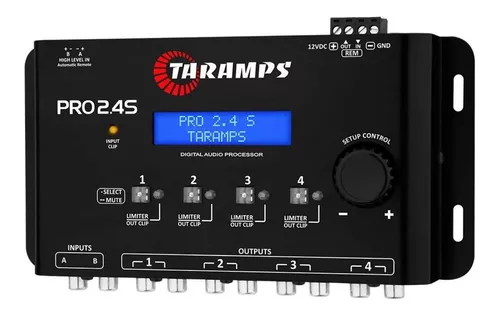
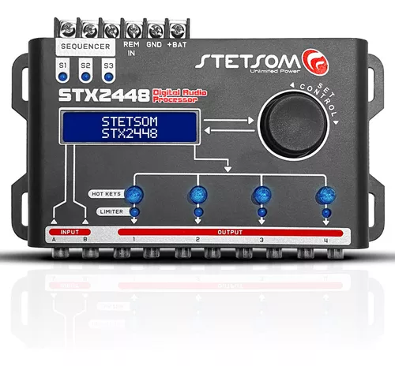
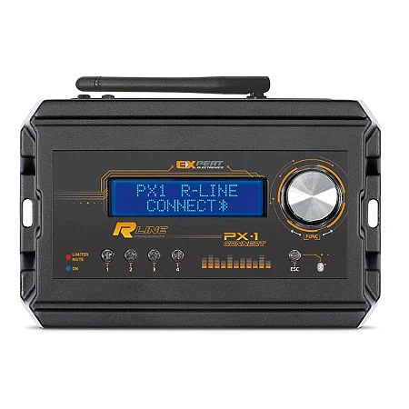

-

Descrição
O Pro 2.4S, é um processador de áudio digital com 4 vias de saída. Projetado com a mais alta tecnologia, ele oferece recursos e ajustes indispensáveis para o som automotivo, como: crossover com diversos filtros, equalização gráfica de 15 bandas, 12 equalizações pré-definidas, equalização paramétrica, alinhamento, roteamento, inversão de fase, limiter, indicador de clip de entrada e saídas, saída de sinal remoto para acionar amplificadores, gerador de áudio, entre muitos outros. Além disso, possui entrada de áudio via RCA e também entrada Fio, possibilitando o uso com players convencionais e também originais (ex; multimídias sem saída RCA). Outro diferencial deste produto é o sistema anti-puff, que evita estouros indesejáveis ao ligar e desligar o som. Tudo isso e muito mais para manter seu sistema de som sempre regulado, alinhado e com a qualidade que você merece.
INFORMAÇÕES TÉCNICAS
IMPEDÂNCIA DE ENTRADA 10K Ohms (RCA)
50 Ohms (FIO)
IMPEDÂNCIA DE SAÍDA 47 Ohms
NÍVEL MÁXIMO DE ENTRADA 5,9Vpp 2,1V RMS (RCA)
28Vpp 10V RMS (FIO)
NÍVEL MÁXIMO DE SAÍDA 5,9Vpp 2,1V RMS
RESPOSTA EM FREQUÊNCIA 10Hz ~ 22KHz
DISTORÇÃO HARMÔNICA TOTAL 0,01%
RELAÇÃO SINAL/RUÍDO >90dB
CROSSTALK (SEPARAÇÃO ENTRE CANAIS) >80dB
CANAIS DE ENTRADA 2
CANAIS DE SAÍDA 4
ROTEAMENTO A,B,A+B
GANHO GERAL -80 ~ 0dB
GANHO DAS SAÍDAS -45 a +15dB
CROSSOVER HPF(Variável): Filtros Variáveis
LPF(Variável): Filtros Variáveis
FILTROS LINKWITZ RILLEY -12,-18,-24,-36,-48dB/Oitava
FILTROS BUTTERWORTH -6,-12,-18,-24,-36,-48dB/Oitava
ALINHAMENTO 8,0 mS (272cm)
FASE 0 / 180º
IDIOMAS Português - Inglês - Espanhol
POSIÇÕES DE MEMÓRIA 3 + Padrão de fábrica
TENSÃO DE ALIMENTAÇÃO (POWER) 10 ~ 16VDC
PESO 0,450 Kg
EAN 7898556847919
R$213,00
Carrinho
Total: 0.00
-

DESCRIÇÃO
Trazendo inovação e tecnologia para o mercado de Som Automotivo, a STETSOM lança o Processador de Áudio Digital Automotivo STX2448, capaz de realizar diversos ajustes, desde filtros, equalização gráfica e paramétrica, alinhamento, inversão de fase, limiter, gerador de áudio, entre outras. Aprimorando o seu sistema de áudio!
Por meio de um Display de LCD e uma interface intuitiva, permite ajustes de áudio em tempo real.
O STX2448 apresenta 2 entradas de áudio (A e B) e 4 saídas independentes, e possibilita a escolha da fonte de áudio (A, B ou A+B) para cada saída.
Possui sistema de Equalização integrado, com Equalizador Gráfico de 15 bandas de ajuste manual ou por meio de 12 Predefinições (Flat, Loudness, Bass Boost, Mid Bass, Treble Boost. Powerful, Electronic, Rock, Hip Hop, Pop, Vocal e Pancadão).
Para ajustes de equalização profissional, conta com 5 Equalizadores Paramétricos com controle de ganho, definição específica de frequência e largura de banda do equalizador. Permitindo ajustes finos e controle detalhado de equalização.
A função Crossover, possibilita definir precisamente as frequências de cortes, as taxas de atenuação e a topologia dos filtros LowPass e HighPass, com filtros Butterworth e Linkwitz-Riley (12/18/24/36/48 dB/8ª).
Para auxiliar na proteção de amplificadores e alto-falantes, o STX2448 possui um Limiter com sistema “Dynamic Attack-Release” que controla de maneira dinâmica e em tempo real os parâmetros de Attack e Release, proporcionando segurança e fidelidade sonora.
No tratamento do áudio possui ainda recursos de Alinhamento através do Delay de Alta Precisão, Inversão de Fase, Ganho independente por saída e Master Level.
Para medições e ajustes precisos, o STX2448 possui um Gerador de Áudio integrado, com geração de tom e varredura de frequência.Conta ainda com as funções de gerenciamento, Salvar e Carregar Configurações na memória, Senha de Segurança que bloqueia a edição dos parâmetros, Letreiro/Texto de Exibição e Seleção de Idioma.
ESPECIFICAÇÕES TÉCNICAS
CARACTERÍSTICAS STX2448
Quantidade de processadores (DSPs) 1
Número de Canais de Entrada 2
Número de Canais de Saídas 4
Ganho de Saída ✔
Master Level 0 ~ 100%
Equalizador Gráfico 15 Bandas (Band)
Presets de Equalização Gráfica 15
Equalizador Paramétrico de Entrada 1
Equalizador Paramétrico de Saída 1 / Saída (Total: 4)
Roteamento A,B / A+B
Crossover Butterworth (dB/8ª) 12/18/24/36/48
Crossover Linkwitz-Riley (dB/8ª) 12/18/24/36/48
Limiter ✔
Automatic Attack/Release ✔
Delay 0 ~ 8ms (275cm)
Gerador de Frequência ✔
Varredura de Frequência ✔
Display LCD16x2 Caracteres/Characters
Proteção de tela Texto/Text
Senha de Segurança ✔
Resposta em Frequência 10Hz ~ 22,5KHz @ -1 dB
Latência 1,08 ms
Relação Sinal Ruído >90 dB
THD <0,01%
Separação de Canais >80 dB
Máxima Tensão de Entrada 4,5 Vpp (+6,3 dBu)
Máxima Tensão de Saída 4,5 Vpp (+6,3 dBu)
Tensão de Alimentação 10V ~ 15V DC
Dimensões (A x L x C) mm 37 x 200 x 101 mm
Peso Kg 0.455
R$429,00
Carrinho
Total: 0.00
-

Descrição
// REDE AUTOPARTS //
* LANÇAMENTO *
* MODELO NOVO R-LINE LIMITER *
*** ATENÇÃO: NÃO É O MODELO BLUETOOTH - NÃO ACOMPANHA ANTENA
PX-1 R-LINE LIMITER
- Limiter RMS/Pico
- 4 canais
- 2 entradas digitais
- Roteamento de canais
- 11 bandas de equalização de entrada
- 1 banda de equalização paramétrica por canal
MUTE, PHASE, LIMITER, GANHO, DELAY, RESET
-A Expert Electronics foi a primeira empresa a fabricar processador de áudio automotivo. Este produto se popularizou rapidamente por reunir os melhores recursos para aprimorar a qualidade do seu Som Automotivo.
- Crossover com filtros do tipo Butterworth, Linkwitz-Riley e Bessel, com atenuações de 6 a 48dB/8°
- Delay independente por canal
- Limiter com Threshold, Attack e Decay configuráveis
- Inversão de polaridade
- Ganho de saída/geral
- Mute independente por canal
- Gerador de ruído-rosa
- Senha de usuário
- 3 Memórias 100% configuráveis
- Preset com todas as configurações
- Ganho independente por canal
ESPECIFICAÇÕES TÉCNICAS
Resolução: 24 Bits
Freq. de amostragem: 48 kHz
Conexão: RCA
Nível máx. de entrada: 6 a 2Vrms
Impedância de entrada: 100K
Nível máx. de saída: 3.5Vrms
Impedância de saída: 470R
Latência de processamento: 1,08ms
Resp. de frequência: 10Hz a 22 kHz (-1db)
Equalização (Gain): -12dB / +12dB
Filtro High-Pass: 20 Hz - 22 kHz
Filtro Low-Pass: 20 Hz - 22 kHz
THD+N Max: 0,01%
Gain: -18dB / 6dB
Phase: 0º / 180º
elação Sinal x Ruído: 100dB
Rensão de alimentação: 10 ~ 15Vdc
TConsumo: 300ma (5w)
Fusível interno: 1 A
Chassis de alumínio
Dimensões: 154 x 104 x 46mm (C x L x A)
Peso: 0.42kg
OBSERVAÇÕES
- Todos os produtos com NOTA FISCAL
- Garantia de 1 ano pelo fabricante
- Envios em 24h úteis
- Imagens Meramente Ilustrativas
- Recomendamos que a instalação seja feita por um profissional capacitado. Não nos responsabilizamos por má instalação ou uso indevido do produto.
R$204,00
Carrinho
Total: 0.00